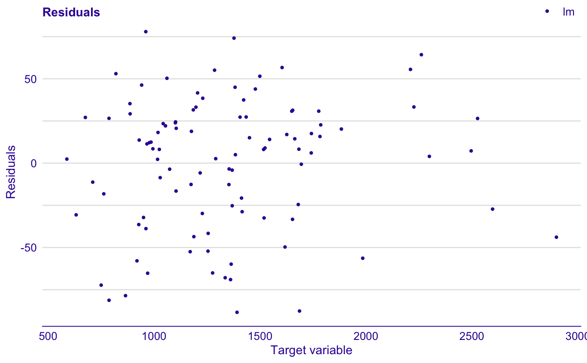
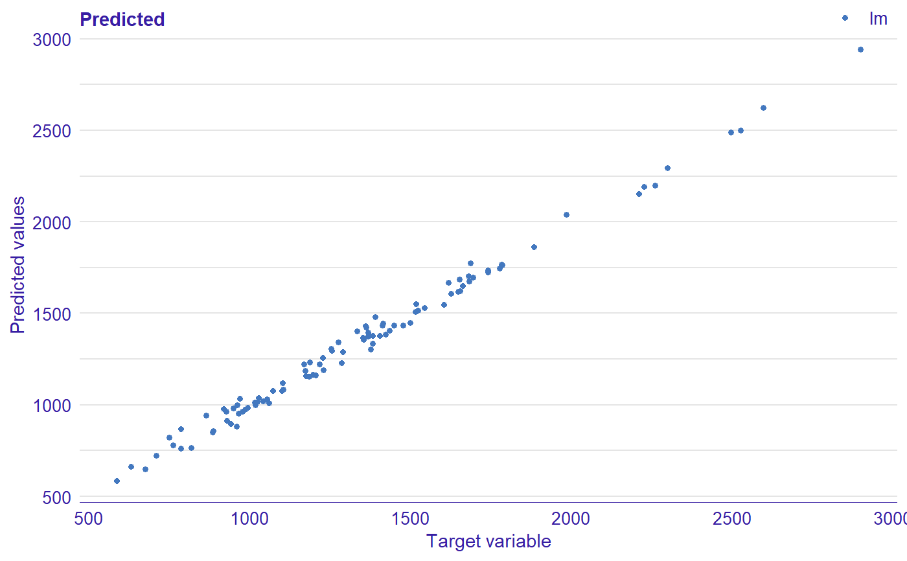
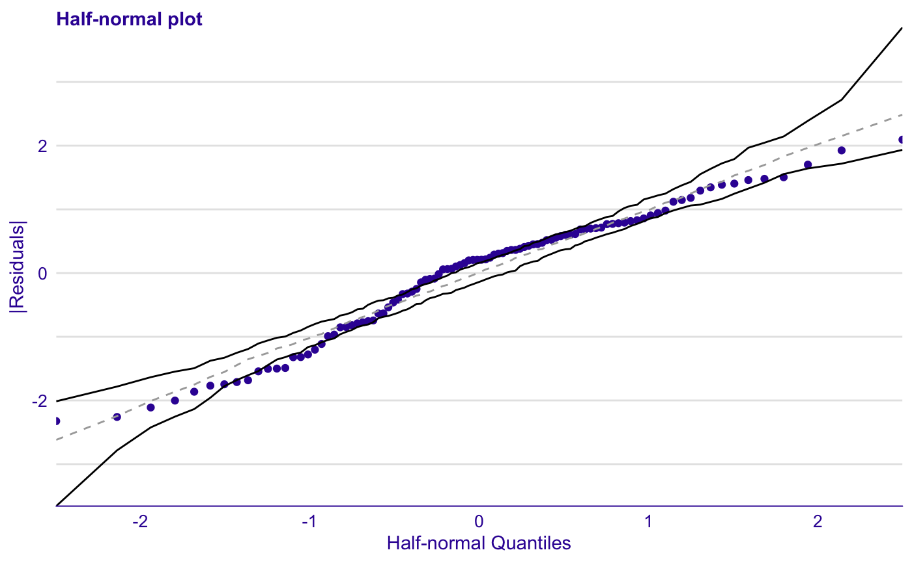
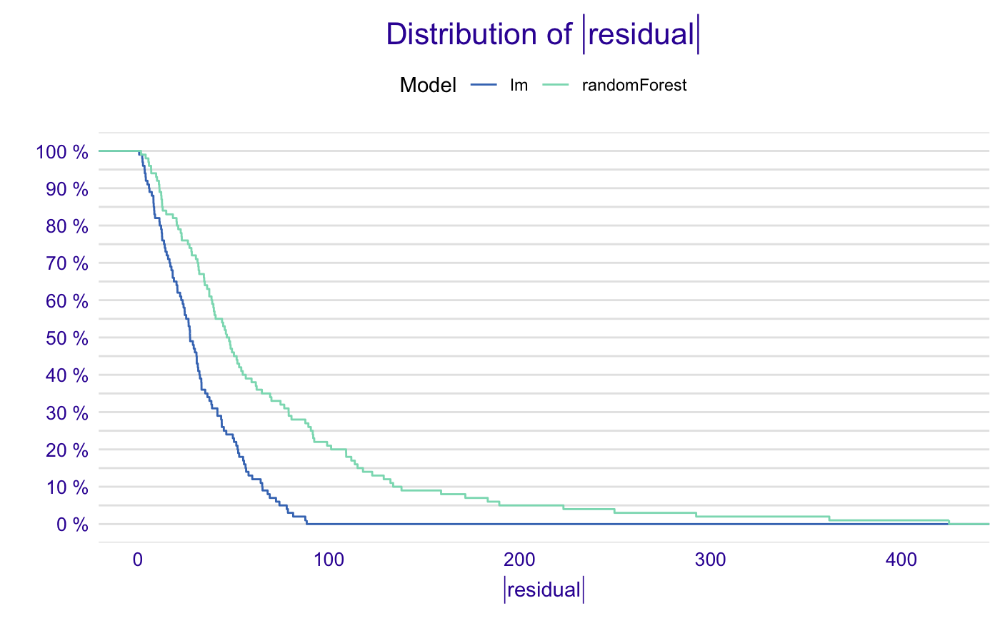

This function provides several diagnostic plots for regression and classification models.
Provide object created with one of aduditor's computational functions, model_residual,
model_cooksdistance, model_evaluation, model_performance,
model_evaluation.
plot_auditor(x, ..., type = "residual", ask = TRUE, grid = TRUE) # S3 method for auditor_model_residual plot(x, ..., type = "residual", ask = TRUE, grid = TRUE) # S3 method for auditor_model_performance plot(x, ..., type = "residual", ask = TRUE, grid = TRUE) # S3 method for auditor_model_halfnormal plot(x, ..., type = "residual", ask = TRUE, grid = TRUE) # S3 method for auditor_model_evaluation plot(x, ..., type = "residual", ask = TRUE, grid = TRUE) # S3 method for auditor_model_cooksdistance plot(x, ..., type = "residual", ask = TRUE, grid = TRUE)
| x | object of class 'auditor_model_residual' (created with |
|---|---|
| ... | other arguments dependent on the type of plot or additionl objects of classes 'auditor_model_residual', 'auditor_model_performance', 'auditor_model_evaluation', 'auditor_model_cooksdistance', 'auditor_model_halfnormal'. |
| type | the type of plot. Character or vector of characters. Possible values: 'acf', 'autocorrelation', 'cooksdistance', 'halfnormal', 'lift', 'pca', 'radar', 'correlation', 'prediction', 'rec', 'resiual', 'residual_boxplot','residual_density', 'roc', 'rroc', 'scalelocation', 'tsecdf' (for detailed description see corresponding functions in see also section). |
| ask | logical; if TRUE, the user is asked before each plot, see |
| grid | logical; if TRUE plots will be plotted on the grid. |
plot_acf, plot_autocorrelation, plot_cooksdistance,
plot_halfnormal, plot_residual_boxplot, plot_lift, plot_pca,
plot_radar, plot_correlation,
plot_prediction, plot_rec, plot_residual_density, plot_residual, plot_roc,
plot_rroc, plot_scalelocation, plot_tsecdf
dragons <- DALEX::dragons[1:100, ] # fit a model model_lm <- lm(life_length ~ ., data = dragons) # use DALEX package to wrap up a model into explainer exp_lm <- DALEX::explain(model_lm, data = dragons, y = dragons$life_length)#> Preparation of a new explainer is initiated #> -> model label : lm ( default ) #> -> data : 100 rows 8 cols #> -> target variable : 100 values #> -> predict function : yhat.lm will be used ( default ) #> -> predicted values : numerical, min = 585.8311 , mean = 1347.787 , max = 2942.307 #> -> residual function : difference between y and yhat ( default ) #> -> residuals : numerical, min = -88.41755 , mean = -1.489291e-13 , max = 77.92805 #> A new explainer has been created!# validate a model with auditor library(auditor) mr_lm <- model_residual(exp_lm) # plot results plot(mr_lm)#> Gaussian model (lm object)plot(hn_lm)library(randomForest) model_rf <- randomForest(life_length~., data = dragons) exp_rf <- DALEX::explain(model_rf, data = dragons, y = dragons$life_length)#> Preparation of a new explainer is initiated #> -> model label : randomForest ( default ) #> -> data : 100 rows 8 cols #> -> target variable : 100 values #> -> predict function : yhat.randomForest will be used ( default ) #> -> predicted values : numerical, min = 771.4386 , mean = 1343.187 , max = 2473.604 #> -> residual function : difference between y and yhat ( default ) #> -> residuals : numerical, min = -189.2592 , mean = 4.600239 , max = 424.8169 #> A new explainer has been created!